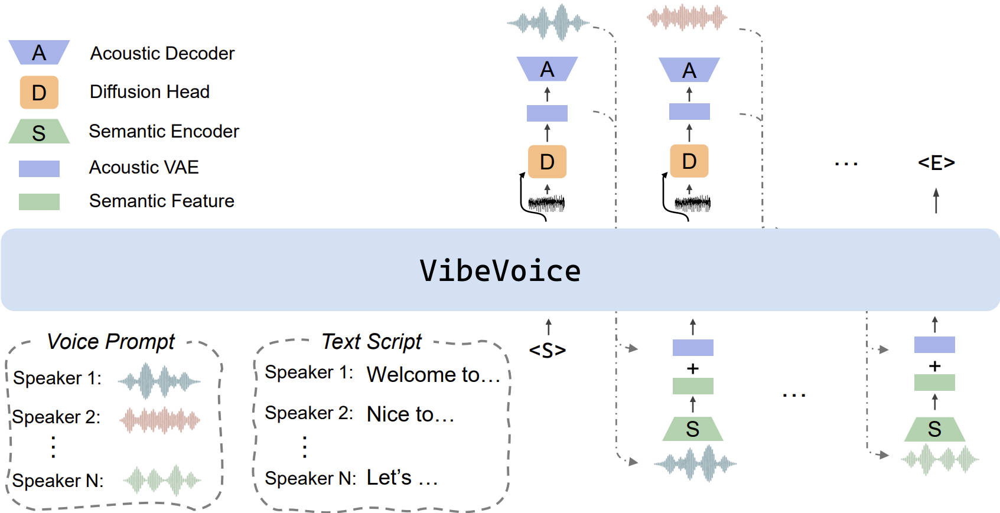

Generating long-form, multi-speaker conversational audio like podcasts poses significant challenges for traditional Text-to-Speech (TTS) systems, particularly in scalability, speaker consistency, and natural turn-taking. This report presents VIBEVOICE, a novel model designed to synthesize long-form speech with multiple speakers by employing the next-token diffusion framework [ 1]—a unified method for modeling continuous data by autoregressively generating latent vectors via diffusion. A core component of our approach is the continuous speech tokenizers operating at an ultra-low frame rate of 7.5. This tokenizer effectively preserves audio fidelity while significantly boosting computational efficiency for processing long sequences. This enables VIBEVOICE to synthesize long-form speech for up to 90 minutes (in a 64K context window length) with up to 4 speakers, capturing the authentic conversational "vibe" and surpassing all known open-source and closed-source dialogue models (e.g., Gemini 2.5 Pro Preview TTS). Code and checkpoint are available now.

4 speakers, 90 min, generated at once
Automatic BGM in the first 48 seconds of the opening remarks, no explicit prompt provided.
Cross-lingual — the woman’s prompt is in English, but her speech is generated in Chinese.
Emergent singing capability, though not explicitly trained on music